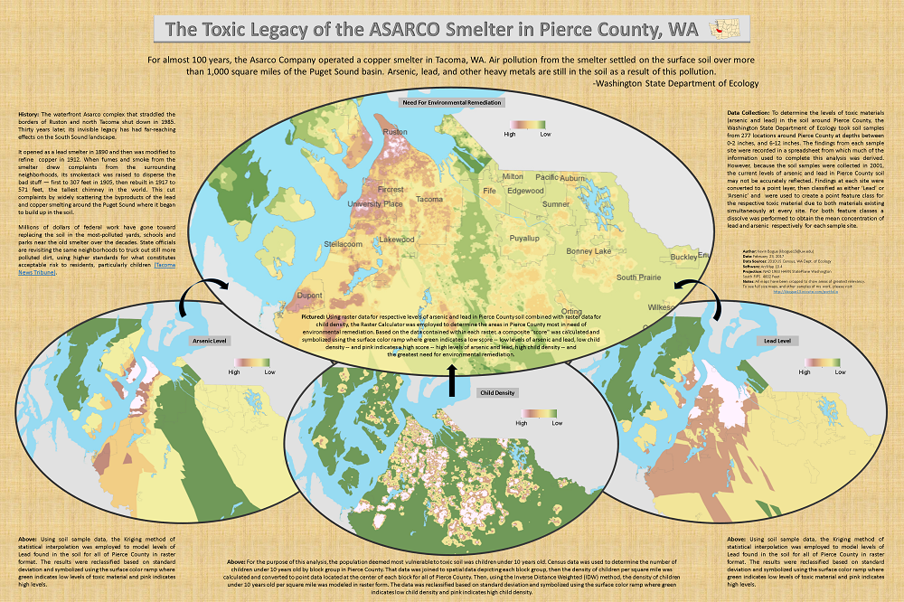

The Toxic Legacy of the ASARCO Smelter
For almost 100 years, the Asarco Company operated a copper smelter in Tacoma, WA. Air pollution from the smelter settled on the surface soil over more than 1,000 square miles of the Puget Sound basin. Arsenic, lead, and other heavy metals are still in the soil as a result of this pollution.
-Washington State Department of Ecology
Using Soil Samples to Determine Levels of Toxic Material
 To determine the levels of toxic materials (arsenic and lead) in the soil around Pierce County, the Washington State Department of Ecology took soil samples from 277 locations around Pierce County at depths between 0-2 inches, and 6-12 inches. The findings from each sample site were recorded in a spreadsheet from which much of the information used to complete this analysis was derived. However, because the soil samples were collected in 2001, the current levels of arsenic and lead in Pierce County soil may not be accurately reflected. Findings at each site were converted to a point layer, then classified as either ‘Lead’ or ‘Arsenic’ and were used to create a point feature class for the respective toxic material due to both materials existing simultaneously at every site. For both feature classes a dissolve was performed to obtain the mean concentration of lead and arsenic respectively for each sample site.
To determine the levels of toxic materials (arsenic and lead) in the soil around Pierce County, the Washington State Department of Ecology took soil samples from 277 locations around Pierce County at depths between 0-2 inches, and 6-12 inches. The findings from each sample site were recorded in a spreadsheet from which much of the information used to complete this analysis was derived. However, because the soil samples were collected in 2001, the current levels of arsenic and lead in Pierce County soil may not be accurately reflected. Findings at each site were converted to a point layer, then classified as either ‘Lead’ or ‘Arsenic’ and were used to create a point feature class for the respective toxic material due to both materials existing simultaneously at every site. For both feature classes a dissolve was performed to obtain the mean concentration of lead and arsenic respectively for each sample site.
Statistical Interpolation to Model Soil Toxicity Levels
Arsenic Levels
 Lead Levels
Lead Levels
 From the soil sample data, the Kriging method of statistical interpolation was employed to model levels of Arsenic and Lead found in the soil for all of Pierce County in raster format. The results were reclassified based on standard deviation and symbolized using a green-to-pink (surface) color ramp where green indicates low levels of toxic material and pink indicates high levels.
From the soil sample data, the Kriging method of statistical interpolation was employed to model levels of Arsenic and Lead found in the soil for all of Pierce County in raster format. The results were reclassified based on standard deviation and symbolized using a green-to-pink (surface) color ramp where green indicates low levels of toxic material and pink indicates high levels.
Locations of Most Vulnerable Populations
 For the purpose of this analysis, the population deemed most vulnerable to toxic soil was children under 10 years old. Census data was used to determine the number of children under 10 years old by block group in Pierce County. That data was joined to spatial data depicting each block group, then the density of children per square mile was calculated and converted to point data located at the center of each block group for all of Pierce County, which is why it appears as though there are populations of children in places where one would not expect to find any -- i.e. in the water. This procedure was done this way for modeling purposes and will be addressed in the next step.
For the purpose of this analysis, the population deemed most vulnerable to toxic soil was children under 10 years old. Census data was used to determine the number of children under 10 years old by block group in Pierce County. That data was joined to spatial data depicting each block group, then the density of children per square mile was calculated and converted to point data located at the center of each block group for all of Pierce County, which is why it appears as though there are populations of children in places where one would not expect to find any -- i.e. in the water. This procedure was done this way for modeling purposes and will be addressed in the next step.
Modeling Child Density Using IDW
 Using the Inverse Distance Weighted (IDW) method, the density of children under 10 per square mile was modeled in raster form. The data was then reclassified based on standard deviation and symbolized using a green-to-pink (surface) color ramp where green indicates low child density and pink indicates high child density.
Using the Inverse Distance Weighted (IDW) method, the density of children under 10 per square mile was modeled in raster form. The data was then reclassified based on standard deviation and symbolized using a green-to-pink (surface) color ramp where green indicates low child density and pink indicates high child density.
Need For Environmental Remediation
 With raster data for levels of arsenic and lead in soil as well as child density, the Raster Calculator was employed to determine the areas in Pierce County most in need of environmental remediation. Based on the data contained within each raster, a composite "score" was calculated and symbolized using the green-to-pink (surface) color ramp where green indicates a low score -- low levels of arsenic and lead, low child density -- and pink indicates a high score -- high levels of arsenic and lead, high child density -- and the greatest need for environmental remediation.
With raster data for levels of arsenic and lead in soil as well as child density, the Raster Calculator was employed to determine the areas in Pierce County most in need of environmental remediation. Based on the data contained within each raster, a composite "score" was calculated and symbolized using the green-to-pink (surface) color ramp where green indicates a low score -- low levels of arsenic and lead, low child density -- and pink indicates a high score -- high levels of arsenic and lead, high child density -- and the greatest need for environmental remediation.
Final Analysis

{kind=link}